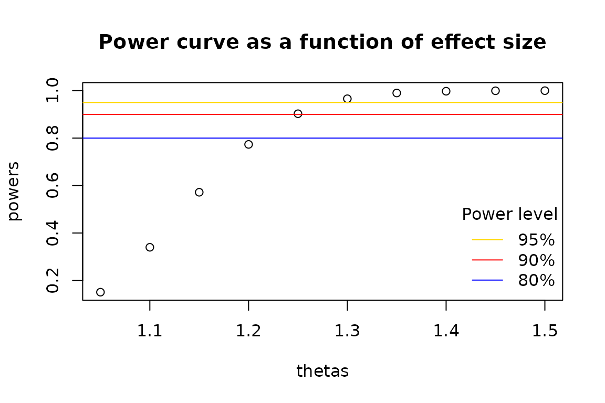

vignettes/samplesizeCMH-power.Rmd
samplesizeCMH-power.RmdWe will use the Titanic dataset in
the datasets package to demonstrate a
post hoc power calculation. This dataset is explored in greater
detail in the introductory
vignette.
Let \(X\) = sex, \(Y\) = survival, and \(Z\) = class. Just as was performed in the introductory vignette, we will load the data and then create a set of partial tables stratified at fixed levels of class.
data(Titanic, package = "datasets")
partial_tables <- margin.table(Titanic, c(2,4,1))
ftable(partial_tables)## Class 1st 2nd 3rd Crew
## Sex Survived
## Male No 118 154 422 670
## Yes 62 25 88 192
## Female No 4 13 106 3
## Yes 141 93 90 20Performing a CMH test on the partial tables above shows that there is strong evidence that the common odds ratio is greater than one.
mantelhaen.test(partial_tables)##
## Mantel-Haenszel chi-squared test with continuity correction
##
## data: partial_tables
## Mantel-Haenszel X-squared = 360.33, df = 1, p-value < 2.2e-16
## alternative hypothesis: true common odds ratio is not equal to 1
## 95 percent confidence interval:
## 8.232629 14.185153
## sample estimates:
## common odds ratio
## 10.80653Using the power.cmh.test()
function, we may calculate the probability that our rejection of the
null hypothesis is a true result.
library(samplesizeCMH)
power.cmh.test(
p1 = apply(partial_tables, 3, prop.table, 2)[1,],
p2 = apply(partial_tables, 3, prop.table, 2)[3,],
N = sum(Titanic),
power = NULL,
s = apply(partial_tables[,1,],2,sum) / apply(partial_tables,3,sum),
t = apply(partial_tables, 3, sum) / sum(Titanic)
)## NOTE: Effect size ('theta') is not consistent between strata.## Power and sample size calculation for the Cochran Mantel Haenszel test
##
## N = 2201
## Effective N = 2201
## Significance level = 0.05
## Power = 1
## Alternative = two.sided
##
## Number of subjects per each group:
## ______________________________________
## Group | 1 2 3 4
## ======================================
## Case | 122 167 528 673
## Control | 203 118 178 212
##
## CALL:
## power.cmh.test(p1 = apply(partial_tables, 3, prop.table, 2)[1,
## ], p2 = apply(partial_tables, 3, prop.table, 2)[3, ], N = sum(Titanic),
## power = NULL, s = apply(partial_tables[, 1, ], 2, sum)/apply(partial_tables,
## 3, sum), t = apply(partial_tables, 3, sum)/sum(Titanic))Perhaps unsurprisingly, the power of this test approaches 100%.
It does not make sense to calculate power in a study when the null
hypothesis is not rejected. However, it may be of interest to the
researcher to determine the minimum effect size that could be detected,
given the sample size of the study and a specified power. We use the
example of the Nurses’ Health Study explored by Munoz and Rosner (1984). This study looked for a
link between oral contraceptives and breast cancer, stratified by age
(Barton et al. 1980; Hennekens et al.
1984). The data for this illustration has been included in the
samplesizeCMH package.
## Age Group <= 34 35 - 39 40 - 44 45 - 49 50 - 55
## OC Usage Disease Status
## Exposed Case 31 57 69 86 30
## Control 363 521 760 725 272
## Not Exposed Case 40 107 196 241 132
## Control 327 1146 1914 2503 1370Here, as shown in Hennekens et al. (1984), the Mantel-Haenszel test shows non-significant results, with the common odds ratio approximately equal to 1.
mantelhaen.test(contraceptives)##
## Mantel-Haenszel chi-squared test with continuity correction
##
## data: contraceptives
## Mantel-Haenszel X-squared = 0.33106, df = 1, p-value = 0.565
## alternative hypothesis: true common odds ratio is not equal to 1
## 95 percent confidence interval:
## 0.902928 1.214722
## sample estimates:
## common odds ratio
## 1.047285The question now is what effect size would be detectable if an effect
truly did exist in the data. That is to say, what effect size were we
prepared to correctly detect given our data and specified significance
level and power? We may vectorize the power.cmh.test()
function to test a wide range of effect sizes to see where the effect
size crosses over into adequate power.
vpower <- Vectorize(power.cmh.test, "theta", SIMPLIFY = FALSE)
thetas <- seq(1.05,1.5,0.05)
power_list <- vpower(
theta = thetas,
p2 = contraceptives[1,2,] / apply(contraceptives[,2,],2,sum),
N = sum(contraceptives),
power = NULL,
s = 1/11,
t = apply(contraceptives, 3, sum) / sum(contraceptives),
alternative = "greater"
)
powers <- sapply(power_list, "[[", "power")
names(powers) <- thetas
powers## 1.05 1.1 1.15 1.2 1.25 1.3 1.35 1.4
## 0.1507626 0.3399285 0.5718383 0.7734926 0.9027666 0.9659347 0.9901502 0.9976178
## 1.45 1.5
## 0.9995114 0.9999139Using the data above, we may create a power curve.
plot(y = powers, x = thetas, main = "Power curve as a function of effect size")
abline(h = 0.95, col = "gold")
abline(h = 0.90, col = "red")
abline(h = 0.80, col = "blue")
legend(
"bottomright",
legend = c("95%", "90%", "80%"),
col = c("gold", "red", "blue"),
bty = "n",
lty = 1L,
title = "Power level"
)
As we can see from above, 90% power would have been achieved if the common odds ratio was estimated to be approximately 1.25.